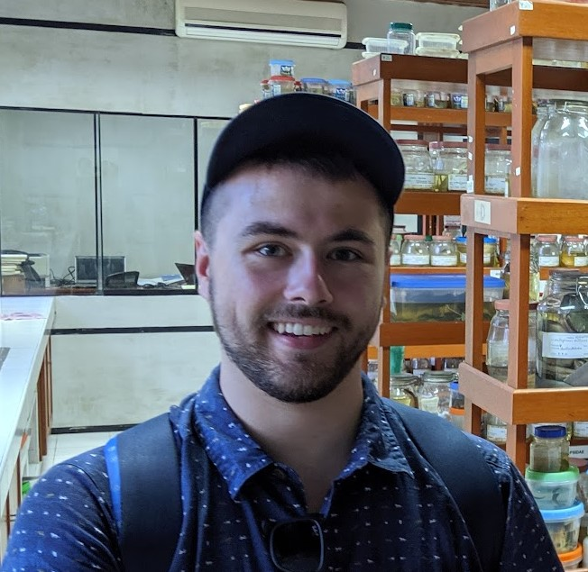

Conservation Data Scientist
Here you’ll find details about my field exploits and lab work. If you have questions, I encourage you to reach out!
Alex (he/him) is a conservation data scientist and field ecologist with broad interest in the application of machine learning and population genetics to the conservation of threatened species. Alex has conducted field studies throughout Central and South America, as well as the Caribbean and much of the northeastern United States.
Currently, Alex is a Data Scientist for Conservation Science Partners, where he works on computer vision projects within the Tortoise Lab. Past projects include generating an image classification model to identify species of Amazonian fish in Peru, a range-wide genetic analysis of the wood turtle (Glyptemys insculpta), and collaborating with SEETurtles.org to develop the SEEShell application featured in National Geographic. Alex is a former fellow and current research collaborator with the Smithsonian National Zoo and OCIO Data Science Lab.
Alex received a B.S in Conservation Biology from the SUNY- College of Environmental Science and Forestry in Syracuse, New York (Advised by Dr. Donald Leopold and Dr. James Gibbs). He earned a M.S in Biology from SUNY- Oneonta (Advised by Dr. Donna Vogler). As a Smithsonian fellow, Alex was supervised by Dr. Rebecca Dikow. During his doctoral studies, Alex was advised by Dr. Chris Rowe and Dr. Helen Bailey.
Alex’s passion for ecology likely stems from growing up in the picturesque piedmont of southeastern Pennsylvania where he spent much of his youth waist deep in rivers and ponds looking for critters. Alex serves as a certified Data Carpentries instructor, a non-profit organization dedicated to teaching computer programming and data science skills through instructional workshops. Alex is also a certified open-water diver, virtual reality enthusiast, miniature painter, and an avid Philadelphia Union soccer fan.
Email: alex.j.robillard@gmail.com